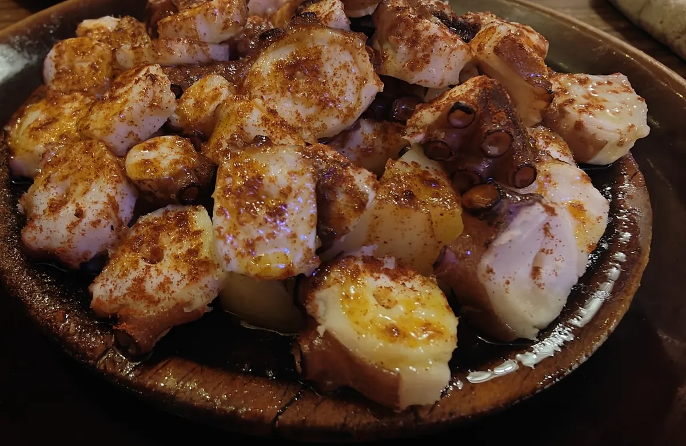
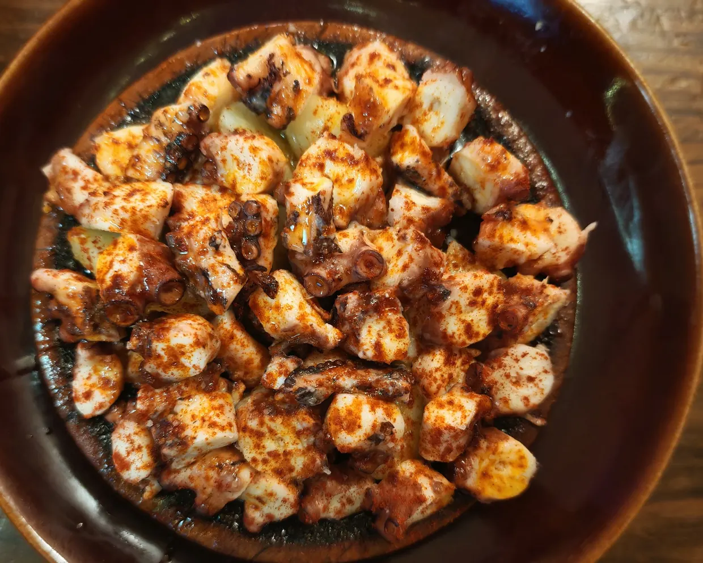
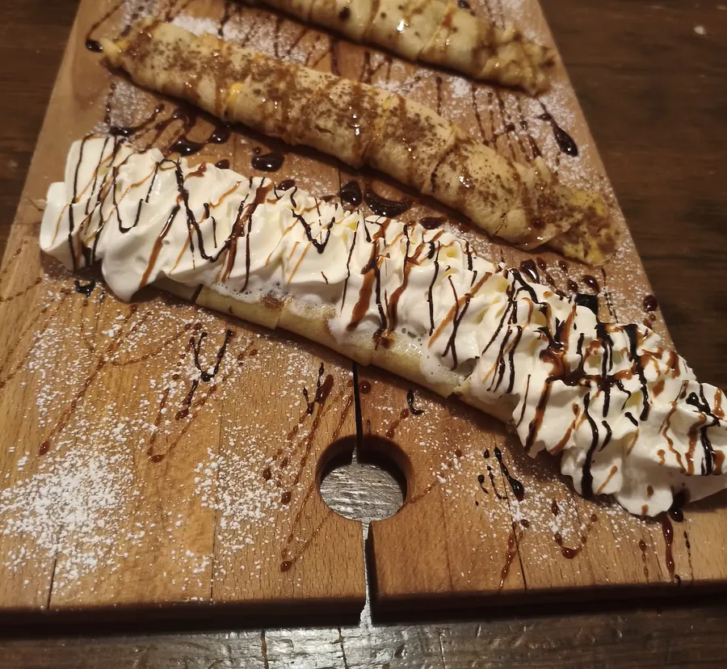
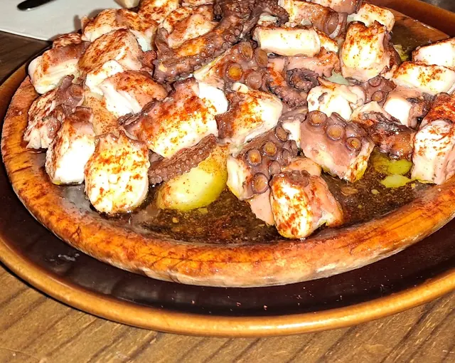
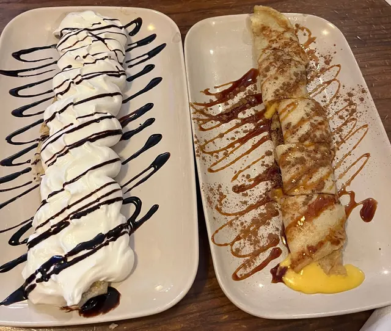
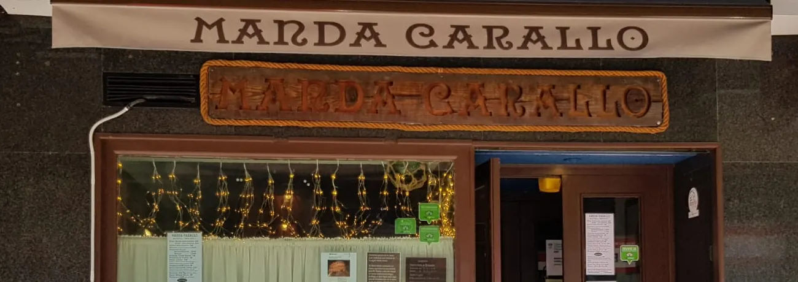

Pulpo con cachelos
Ración 19 € · doble 30 €
177 reseñas hablan del pulpo, según los temas de las reseñas de Google Maps (octubre de 2026).
«[…] el pulpo, imprescindible […]»
Cocina gallega en la calle Carabanchel, Getafe.
Reservas · 654 07 88 23
Zamburiñas, lacón, zorza, filloas y arroz con bogavante por encargo. Te atienden los dueños, en sala. Suele llenarse: mejor reservar.


Ración 19 € · doble 30 €
177 reseñas hablan del pulpo, según los temas de las reseñas de Google Maps (octubre de 2026).
«[…] el pulpo, imprescindible […]»

Dulces, 6 € la unidad: chocolate y nata, crema pastelera con canela y caramelo, o dulce de manzana y caramelo.
Y saladas, de lacón o de salmón ahumado con queso, 13 €.
Precios de la pizarra de mayo de 2026. Pueden haber cambiado: confírmalos al reservar.
Precios de la pizarra de mayo de 2026. Pueden haber cambiado: confírmalos al reservar.
Pide la carta al reservar: 654 07 88 23.
Pulpo con cachelosRación19 €·Doble30 €
Gamba roja a la plancha20 €
Calamar en sartén plancha14 €
Croquetas de jamón o de chipirón1,90 €
Precio por unidad.
Ensalada Manda Carallo13 €
Pimientos de Padrón9 €
Filloas saladas13 €
De lacón o de salmón ahumado con queso.
Lacón14 €
Desalado y cocido.
OrejaRación14 €·Media9 €
ZorzaRación18 €·Media14 €
Solomillo de cerdo adobado con ajo, orégano, pimentón y aceite de oliva extra.
Chuletón con patatas fritas49 €/kg
Queso gallego Arzúa9 €
Pan (cesta)1 €
Por comensal.
Precios de la pizarra de mayo de 2026.

Las sugerencias cambian: pregunta las de hoy.
Zamburiñas2,50 €
Precio por unidad.
Tortilla de BetanzosGrande16 €·Pequeña12 €
Bocarte12 €
Chorizo gallego en sarténRación14 €·Media9 €
Filloa de cecina de León13 €
Con queso semicurado y queso gallego.
Tabla de cecina de León12 €
Tabla de quesos12 €
Mejillón al vapor14 €
Precios de la pizarra de mayo de 2026.
Filloas dulces6 €
Precio por unidad. De chocolate y nata, de crema pastelera con canela y caramelo, o de dulce de manzana y caramelo.
Tarta de Santiago o tarta de queso5 €
Queso con membrillo9 €
Helado3 €
La bola.
Precios de la pizarra de mayo de 2026.

Llámanos con tiempo para encargarlo.
IVA incluido. Para llevar, también: pide por teléfono.
Pregúntanos por los alérgenos.
Fotos de nuestros clientes en Google Maps.
Te atienden los dueños, en sala.
4,7 en Google · 1.399 reseñas
★★★★★
«Los dueños son fantásticos, muy amables y siempre sonrientes. Te hacen sentir como en casa y la comida es muy buena.»
★★★★★
«Todo perfecto, comida riquísima, el trato excelente, repetiremos seguro»
★★★★★
«[…] al final de sorpresa le convidaron a un trozo de tarta»
★★★★★
«Muy buen restaurante, familiar que cuida mucho el producto local de su tierra»
★★★★★
«Como estar en Galicia, pero aquí en Madrid. Muy recomendable.»
★★★★★
«De verdad que cuidan los detalles, se nota que les gusta su trabajo. Se ve el cariño en los platos.»
★★★★★
«Grata sorpresa, tenía muchas ganas de visitarlo pero cuando yo podía no había mesa porque estaba lleno»
★★★★★
«Llevo más de 10 años yendo a este restaurante gallego […] la increíble amabilidad de sus dueños que te hacen sentir como en casa.»
★★★★★
«Restaurante excepcional en todos los sentidos. Atención perfecta, comida muy rica y casera, bien de precio»
★★★★★
«Hemos cenado muy bien y la atención ha sido muy agradable.»
★★★★★
«Excelente comida (el pulpo, imprescindible), trato cercano y ambiente acogedor […]»
★★★★★
«Gallego recomendable en el sur, muy rico con ambiente familiar. Volveremos!»
★★★★★
«Buen trato, ambiente familiar. Les recomiendo ir con reserva.»
★★★★★
«Comida y servicio espectacular, pedimos pulpo, calamar y chuleta, y la verdad que todo de 10»
Frases de reseñas de 5 estrellas en Google Maps, de mayo a octubre de 2026.
Leer las reseñas en GoogleLas reservas, por teléfono.
Para llevar también: pide por teléfono.
Reservas · 654 07 88 23
En puentes y festivos a veces abrimos más: lo avisamos en Instagram, en @mandacarallogetafe.
Busca el toldo crema y el letrero de madera con su cuerda.

C. Carabanchel, 12
28903 Getafe (Madrid)
El mapa es de Google Maps: solo se carga si lo pides, y entonces Google puede guardar sus propias cookies.
¿No está aquí lo que buscas? Llama al 654 07 88 23.
Suele llenarse, así que mejor sí. Las reservas son por teléfono, en el 654 07 88 23.
Llamando con tiempo al 654 07 88 23. El precio te lo decimos al encargarlo.
De miércoles a sábado, comidas de 13:00 a 16:00 y cenas de 20:00 a 23:00; los domingos, de 13:30 a 17:00. Lunes y martes, cerrado. En puentes y festivos a veces abrimos más: lo avisamos en @mandacarallogetafe.
Sí: llama al 654 07 88 23 y pasa a recogerlo.
No hacemos reparto a domicilio. Puedes pedir para llevar por teléfono.
Pregúntanos por los alérgenos al reservar o antes de pedir.
Según Google, se aparca gratis en la calle, aunque a veces cuesta encontrar sitio.
Pulpo, raciones y emociones, en la calle Carabanchel.
C. Carabanchel, 12 · Getafe